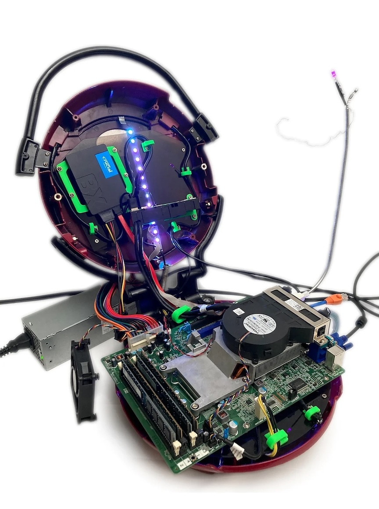
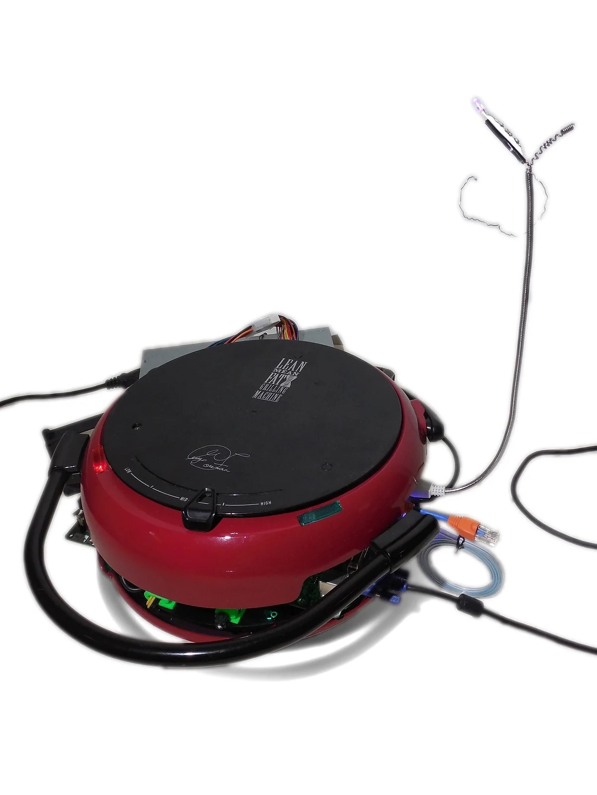

Lean Mean Computing Machine
Year: 2023
Made with: George Foreman 360 Grill and personal computer
Featured:
Custom personal computer (PC) build using a George Foreman 360 Grill, Dell Optiplex desktop computer, speaker, custom LEDs, laser cut acrylic, 3D printed hardware and clips, IBM monitor, and looping video.

The Lean Mean Computing Machine (LMCM) is a fully functional personal computer (PC) whose
components are compressed within a George Foreman 360 Grill. The LMCM is versatile,
allowing preparation of virtual frittatas, pizzas, snacks and appetizers like mini
quiche or chicken nuggets, hot wings, steaks, chicken, burgers, and even ribs.
The LMCM lets you adjust for the perfect cooking temperature and is healthier than other
computing methods because of the patented slanted and nonstick design, draining fat and
technological byproduct from the virtual cooking process. Grilling components from both
sides is a real time saver, making the LMCM the go-to option for those with a busy schedule.
Specifications
Inte(R) Core(™) i7-3770 CPU @ 3.40GHz
106 sq. in. grilling space
16.0 GB Installed RAM
1500 watt cooking power
64-bit operating system
Temperature control slide and LED indicator lights
Crucial BX500 240GB Solid State Drive (SSD)
- Inte(R) Core(™) i7-3770 CPU @ 3.40GHz
- 106 sq. in. grilling space
- 16.0 GB Installed RAM
- 1500 watt cooking power
- 64-bit operating system
- Temperature control slide and LED indicator lights
- Crucial BX500 240GB Solid State Drive (SSD)